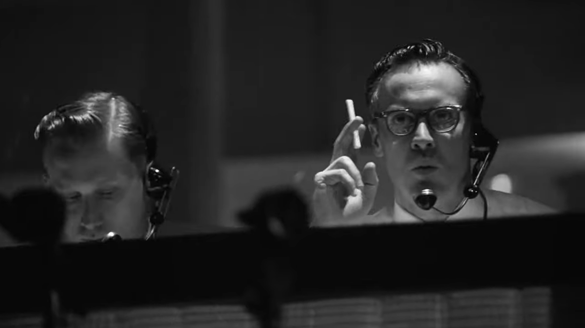
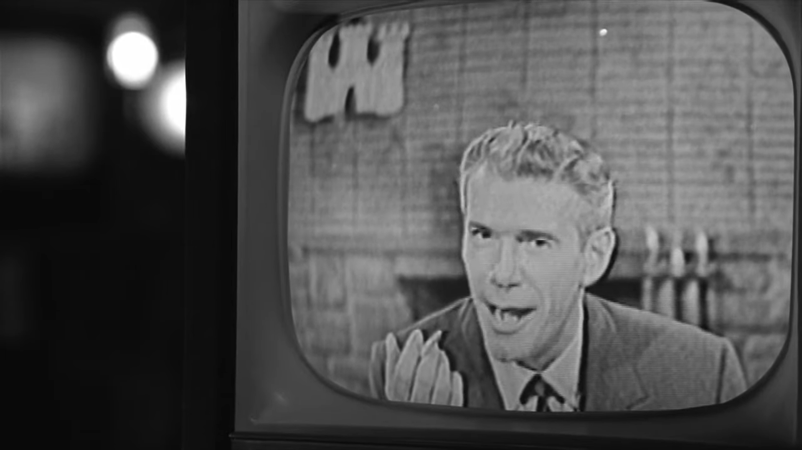
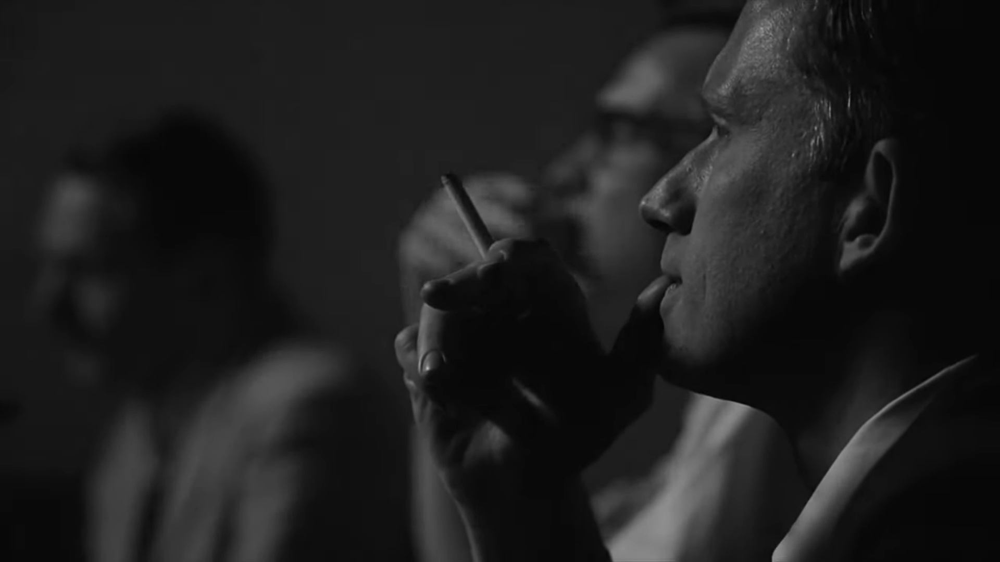
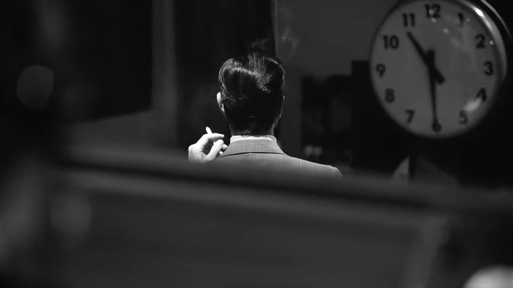
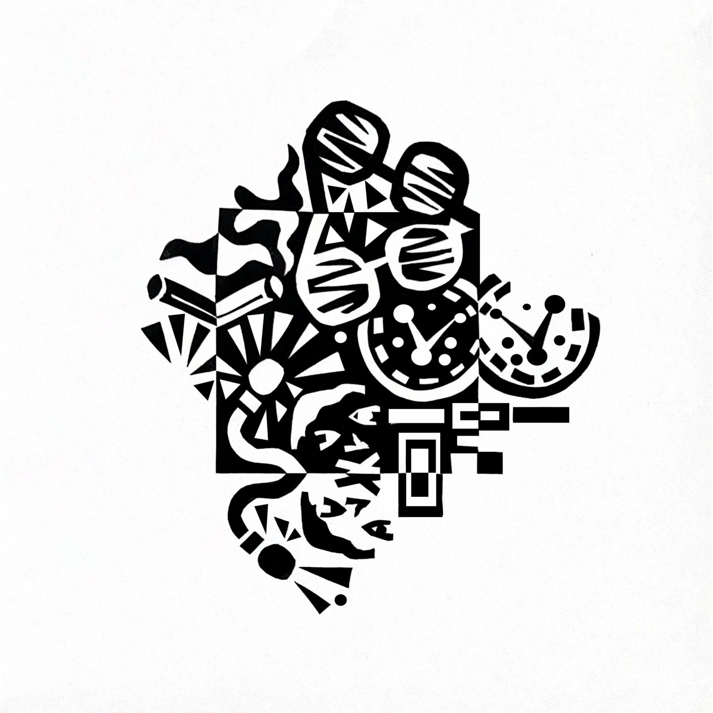
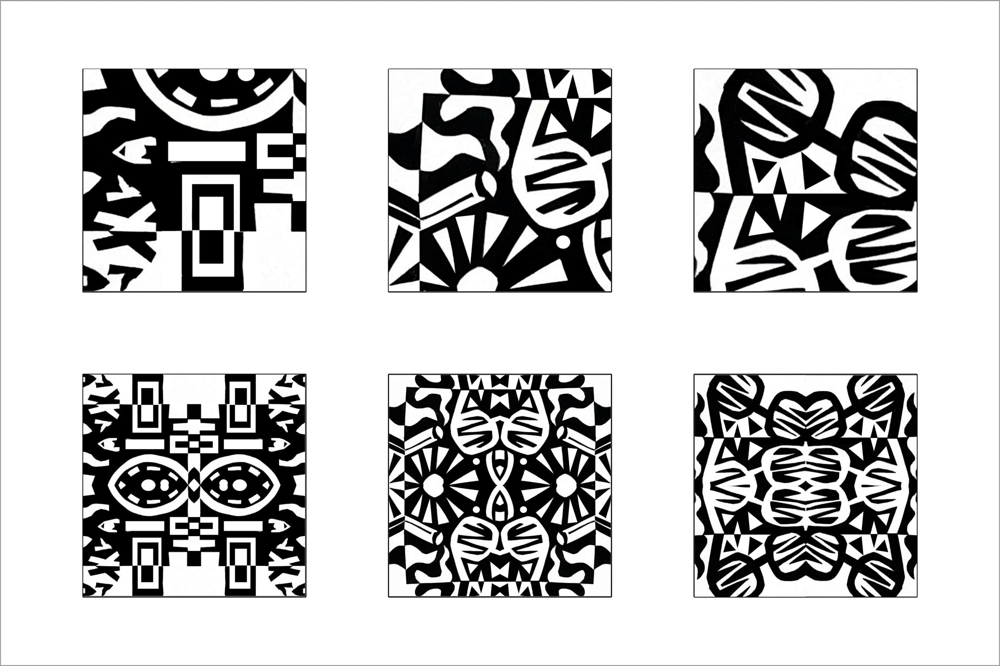
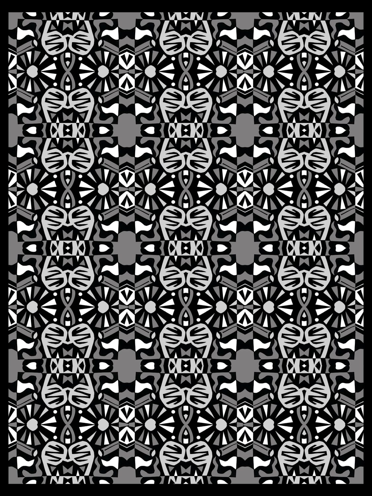
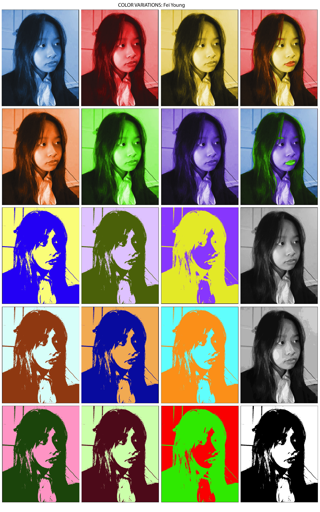
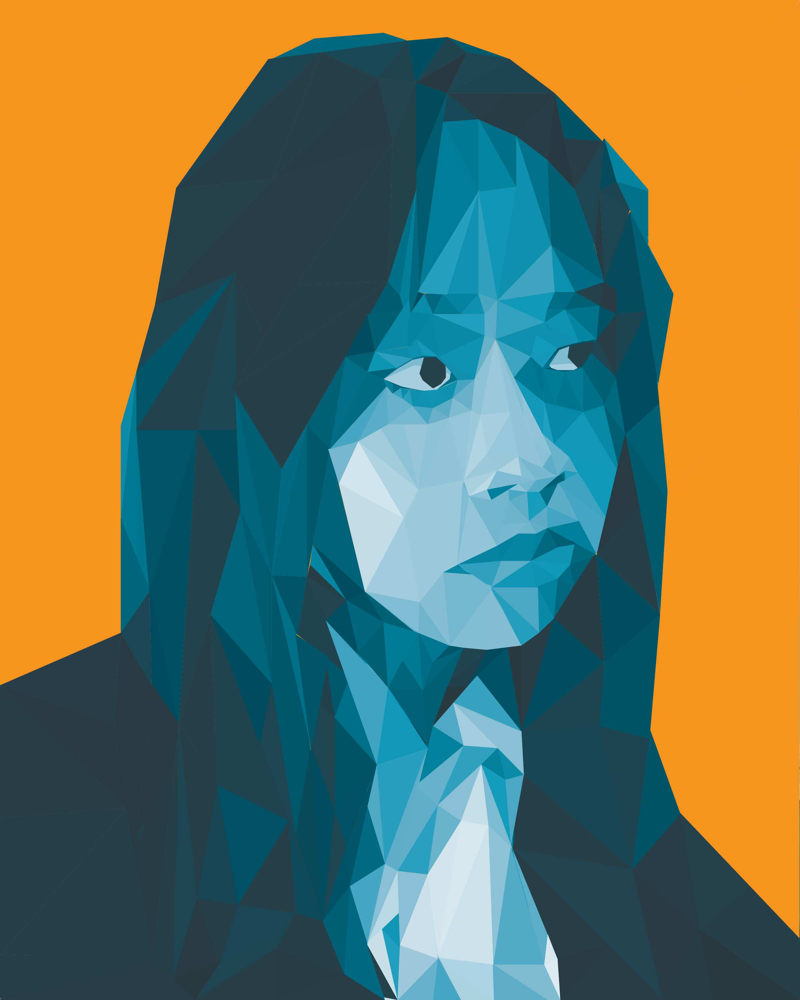

Date: Apr. 2023 - Mar. 2024
Role: Designer / Photographer
Tools: Photoshop, Illustrator, Photography, Multimedia Tools (traditional paper, pen, glue, etc.)
In my visual studies classes, I delved into color theory and experimented with monochromatic and colorful design. This exploration was supported by Adobe tools like Photoshop and Illustrator, allowing me to blend both physical and digital media. My design process typically began with ideation and sketching, where I developed initial concepts. From there, I transitioned my ideas into a digital space, refining and manipulating them to bring each project to life in a multimedia format.
View some of my projects below!
Shapes and Patterns
For this project, I analyzed the black-and-white film Good Night, and Good Luck, directed by George Clooney. Set in post-war America, the movie delves into the political tensions of the Cold War era, exploring themes of power corruption, media freedom, and societal fear.
Drawing inspiration from the film, I examined four key stills and identified recurring motifs that highlighted these themes. I then translated these motifs into a notan design by carefully cutting and gluing black shapes onto white paper, creating a visual representation that captured the film's contrasting emotions and powerful symbolism.
View the stills and notan below.
    Then in Photoshop, the notan was cropped into 3 units, which were then mirrored in order to create a new pattern.
Among these three units, the second unit was chosen for the final pattern. The mirrored unit was then duplicated in order to create the final motif pattern.
Within the final motif pattern, I played with gray scales and selected 2 shades of gray to create a more visually dynamic pattern.
View the final pattern below.
Color Variation
In my color studies, I explored color theory using the color wheel to experiment with combinations such as complementary, analogous, split complementary, and triadic. I used Illustrator to overlay different colors and mix and match others, aiming to transform a photo of myself into multiple, uniquely colored versions.
Afterwards, I chose the most visually appealing one to me in terms of color. In the end, it was the blue and orange complementary pair.
After choosing my colors, I made a low poly portrait on Illustrator. I did this by sectioning off the different values that I saw in my face and coloring it in with the appropriate match.
View low poly portrait below.
